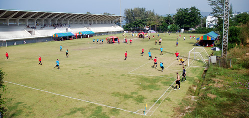
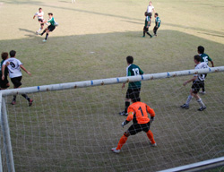
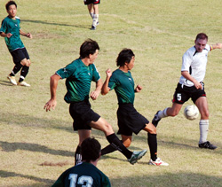
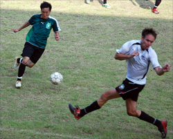
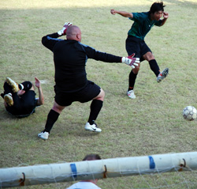
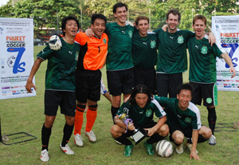

|
Karon Stadium, Phuket, Sunday 25th November,
The Hibs had only eight players this year, but everyone was in good shape and we had a great mix of power and skill. A tough, confident group, and someone was going to have to pry the trophy out of our hands.

**Day One:
Hibs 1 - 0 Perth Select
The party almost ended early when we opened against an Australian youth side, they came out super pumped up and ran circles around us in the first half. Dave stole a pass in their backfield against the run of play and muscled in for the goal, then we found our footing and kept them at bay in the second half. Yohei dribbled in and ripped a shot but it hit (and nearly broke) the cross bar. 1-0 Hibs, and the Aussie youths were never the same again.
Hibs 2 - 1 RBSC
Next we meet a local team from a sports club, who jumped up 1-0 when Jay hesitated to clear a rebound and their striker swept in to finish. But we stayed calm and outplayed them the rest of the way, a good buildup got the ball to Dave, who one-timed a sweet strike upper-corner, 1-1. Then Yama was (kind of) fouled and Yohei stepped up to blast in the free kick, 2-1 Hibs.
Many video watchings were needed to capture all of the subtleties of what happened next. All we have to do is clear the ball for the last 30 seconds, but then Josh chops his man down about 10 yards from the goal to give them a free kick and a chance at the tie. As the wall is setting up Jay mangles a guy who was trying to block out Hitoshi, which everyone sees but the ref. Then they take a great kick, but Hitoshi somehow gets down to parry it away. Just after the shot Bevan grabs the nearest player and face-slams him into the ground, then Josh sits on both of them (said player shows up the next day with a turf burn down the left side of his face). Yohei spends the entire sequence doing a private little jig at the far post.
Hibs survive and win 2-1.

Hibs 1 - 0 One Night Stand
Third game, versus drinking team "One Night Stand" (an omen for Sunday night?) is the easiest, we run all over them and hit the crossbar several times before Bev slots one home from close range. 1-0 Hibs.
**Day Two:
Quarter-Finals: Hibs 2 - 0 RBSC Polo
In the quarter-finals we met another team from the same sports club, they are big and physical and it gets a bit ugly, one of theirs gets a red card after tussling with Jay in front of the box. We finally get our game together and Hitoshi throws a ball about 40 yards to Yohei who rips in a shot from a tight angle left, 1-0 Hibs. Then Dave overpowered the keeper on a loose ball in front of their goal and headed it over and in for our second - we win 2-0, so much for the sports club and their large chain-smoking harem.
Semi-Finals: Hibs 0 - 0 Phuket Morning Stars (Hibs on PKs)
In the semis we meet the second-best team there, the Phuket Morning Stars, who we beat in penalties last year (after Hitoshi saved a few) to win the whole thing. Hitoshi immediately runs out of the mini-goalie box with the ball in his hands, and they gleefully take the gimme free kick, but hit the post. From there it is all Hibs, we dominate them with great passing football but can't buy a goal, even through golden-goal overtime.
On to sudden-death PKs. Yohei has been crushing the ball all tourny so he steps up and crushes our first PK, but right into the crossbar, no goal. All they have to do is score a PK and we're finished, their man walks up and strikes a great shot to his left and starts to raise his arms to celebrate, but then Hitoshi stretches out horizontal to save it and our chances, UNBELIEVABLE PK SAVE, second year in a row. Yama steps up and calmly finishes his shot bottom left, and then their star striker steps up, looks at Hitoshi, gulps, and punts his shot about 20 feet over the goal into the stands. Hibs win on PKs again.
Finals: Hibs 2 - 1 Shanghai Krauts
In the finals it is a beastly large German team that can't keep up with our speedy forwards - Yama, who gets better every game, beats his man and puts a cross to unmarked Bevan who heads home from close range. (In watching the video after, Bevan wins every header that comes near him all tournament, 100%). 1-0 Hibs, it looks to be a cakewalk. But then a Kraut powers through our midfield and shoots from long range, Jay runs up to cut him off but it glances off him and wrong-foots Hitoshi, 1-1. Could be a long game from there, but then Yama collects a long ball from the back, burns three defenders and toes it past the keeper to Yohei, who smashes home from close range, 2-1.
The whistle blows, and we're champs again.
**Man of the tourny:
Yohei was skinning defenders all tournament and every shot he hit was dangerous. But I have to go with our man Hitoshi, who did it all - organized the back, got assists off throwouts, and saved us from the brink twice. Also thanks to Lori for taking video and cheering us on with Ayan (?), who also lifted spirits and much more at the pool.
**The Aftermath
Beers and singing at the stadium after the victory - a drink or two at the hotel pool while we relax. Too many men in the hot tub, but the girls evade Banthai security and scale a wall to join. Rush to the bar for the awards ceremony - waaaaay early, dodgy German coverband is only entertainment. Dave convinces us to order a bottle of vodka. Band sounding much better. Awards start and someone calls us a "smart team" then probably wishes they could take it back watching us over the next hour. We all pile onto the stage to collect the hardware, I think I give a speech. Yama was definetely spotted slugging vodka straight from the cup on the trophy. Free shots from the bar, just what we need. On to the Crocodile to watch Lori's video of the games, which draws a large crowd. The Krauts show up at some point but leave before the part where we beat them. Like last year, Josh puzzles over the great-body/man-face combinations on those around us. Time to move on I guess. Then Bevan is definetely on stage with the lady boys. For 15 minutes. Later Dave shows something to a Tuk-Tuk driver that stuns him senseless. (Driver (clearly in shock): "pakaaan thaaan ginger waaan thakaan"). Morning snorkelers leave and miss Snoop Dawg at the Irish bar. At some point trophy is abandoned to be found the next morning. Dave, team player to the last, gives one final assist before he heads back to the hotel with Bev...
***A phenomenal weekend all around, we have little option but to go for the three-peat in 2008***
Report by Jay Alabaster
|